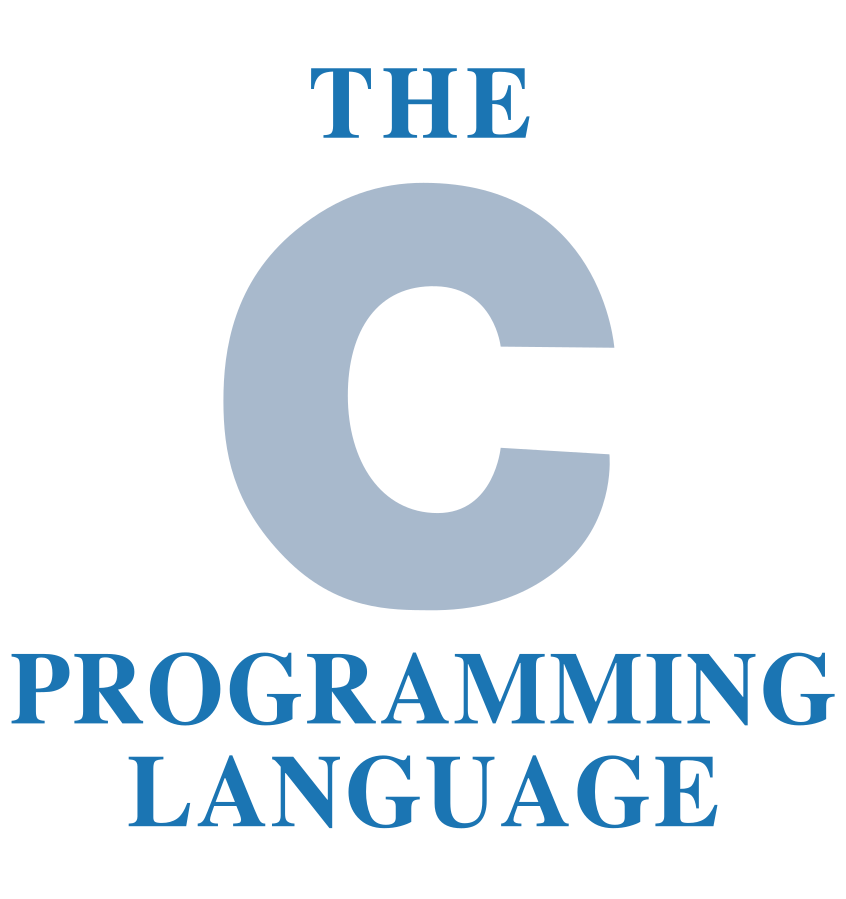
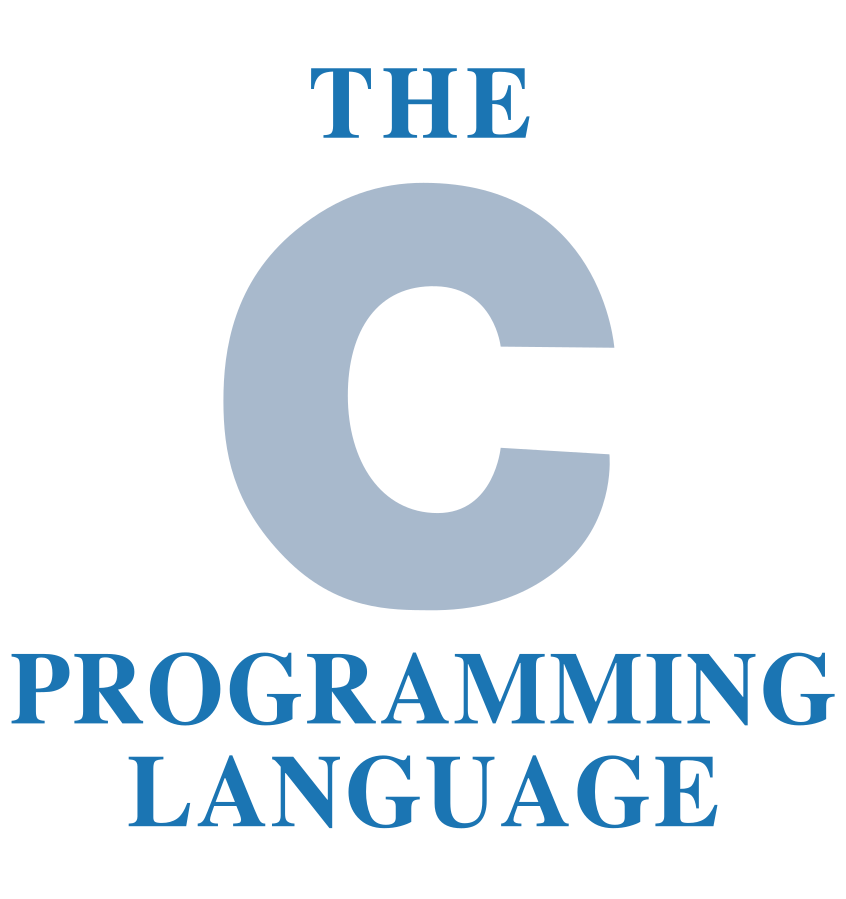

My formation
Computer Science Bachelor's Degree - 2nd year
University of Rouen
2019 - 2020
Computer Science, Electronic, Electric Energy, Automatic Bachelor's Degree - 1st year
University of Rouen
2018 - 2019
Scientific Baccalauréat, speciality Engineering Sciences
Michelet Highschool, 92170 Vanves
June 2018
Tools


Languages

 
